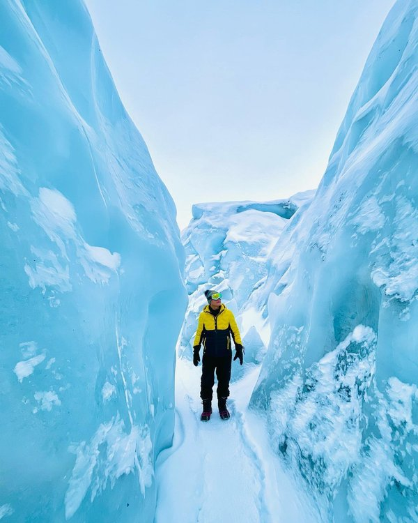

Fonte des glaces ours polaire |
|
Les consequence de la fonte des glaces |
La fonte des glaces a plusieurs conséquences majeures. Tout d’abord, elle contribue à l’élévation du niveau de la mer, ce qui peut entraîner l’érosion des côtes et augmenter les risques d’inondations côtières. De plus, la fonte des glaces peut perturber les courants océaniques et les modèles météorologiques mondiaux. Enfin, la fonte des glaces peut avoir un impact sur les systèmes alimentaires mondiaux, car l’instabilité du temps peut causer des dommages significatifs aux cultures. |